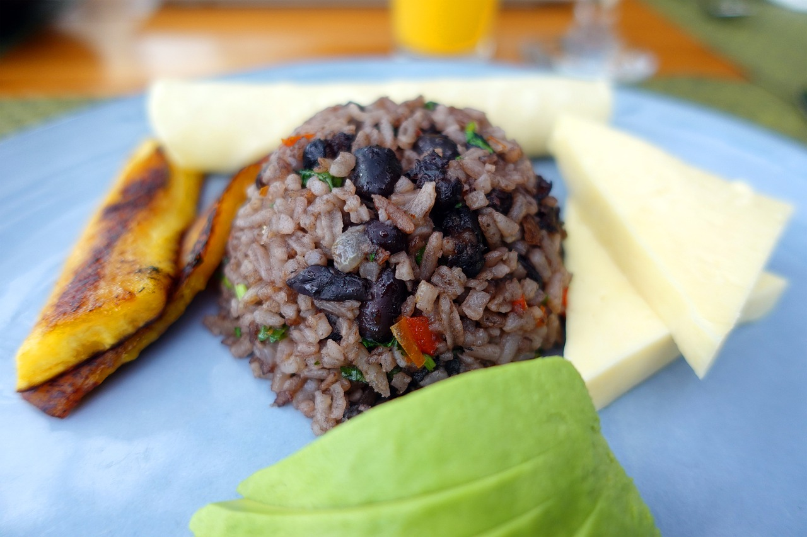

Gallo pinto....................................................................3000
Platillo tipico costarricense a base de arroz y frijoles condimentado con chile, culantro cebollas y la famosa salza Lizano. Tambien se acompaña con un huevo al gusto, platano maduro y salchichon
Ver platillosPicadillo de Papa........................................................2000
Papa cosechada en las mas finas haciendas de la zona del golfo costarricense, acompañado con nuestra deliciosa carne mechada preparada especialmente para este platillo con un toque de nuestro culatro mas fino
Ver platillos

Tamal Costarricense.................................................3000
Platillo elaborado en hojas de plátano y una base de masa de harina de maíz, el cual llevan diversos guisos que lo hacen un plato fuerte por excelencia
Ver platillos